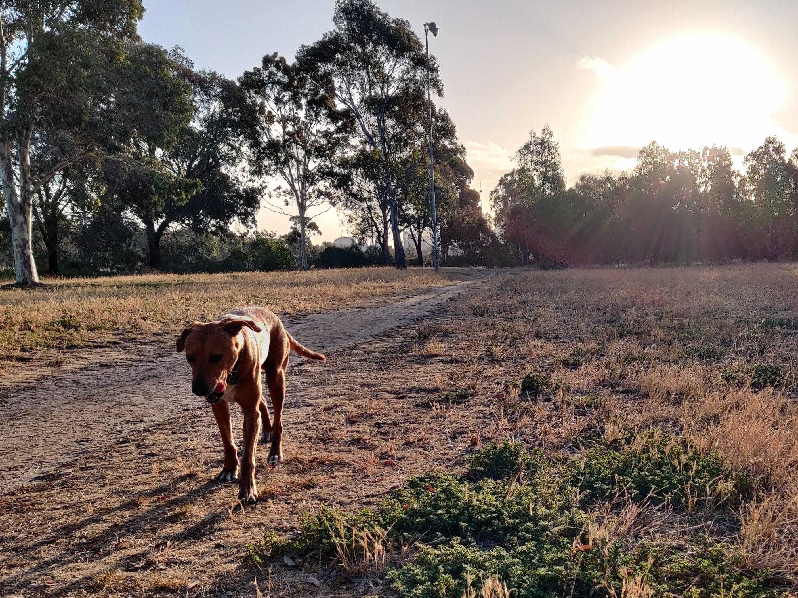
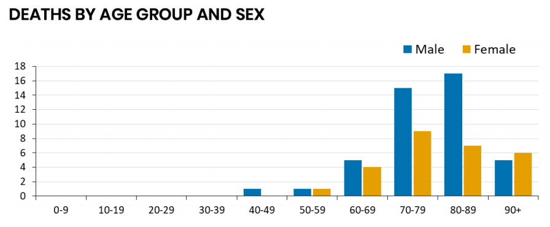

Note: Article expanded on 24 April and again on 27 April. The middle now has more meat. So you can read it again!
As Paul Frijters has recently said on this site, many countries will soon ease their restrictions on social isolation.
As Paul has been pointing out, we pay a high economic and hence social cost for restricting various parts of the society. Paul thinks the current price is far too high. I hold him in high regard, but I simply don't know enough to say, or whether he knows enough to say, or whether anyone else does either. The numbers do seem insanely hard to work out: you must determine not only what it costs to keep someone alive, but the price you would pay in extra infections by keeping restrictions lighter and letting them circulate, infected, in the population.
But there is a limit to how much any country will pay to save a life. (Australia's published limit is somewhere above $4.9 million, according to a note from the PM's department.)
So deep in the government, policymakers are building exit strategies (and, hopefully, briefing communications experts about how to express those strategies to people).
Too many people jump to the assumption that governments, especially those on the right, will happily kill lots of people for the sake of lining shareholders' pockets. My assumption is different: governments, including those on the right, want to win elections. And so far, Scott Morrison and indeed the whole national cabinet have prospered by making good - indeed, anti-Trumpian - decisions.
So here's my guess about where the national cabinet will go from here, and why it won't be easy.
When does the return begin?
Australia will probably move fairly carefully, finding the areas where activity can be opened up with near-zero damage. We may well follow the sort of course mapped out by Harvard's Edmond J. Safra Center for Ethics in its newly-released Roadmap to Pandemic Resilience. It suggests the key steps in returning the economy to something more like normality are:
- expanded test-and-trace;
- a peer-to-peer warning app, ideally open-source;
- a national testing authority of some sort;
- certifications of immunity that demonstrate that a holder has had the disease and that it has run its course; and finally
- returning people carefully to work.
There's more in the paper, although not that much more.
A remarkable number of people think that we're waiting for the magic moment when we can turn the economy back to the "full speed" setting all at once. A UK Spectator article claims that only three options exist for this moment: "A cure, a vaccine or herd immunity. All remain out of reach."
But this seems misguided.
First, a key point in the Harvard paper is that we will not be switching the economy from "closed" to "open"; it has never been closed. GDP is contracting substantially, but it's not disappearing, or anything like that. At worst, Australian GDP may temporarily fall to 90 or 85 per cent of what it was.
Second, we are not going to solve this problem by waiting until a single solution appears. What we're likely to see - what we should see - is a wide range of piecemeal easings. We won't just open to the world. we'll open selectively to other low-coronavirus nations. Governments will check each other's results. We'll iterate.
When will this happen? The Harvard paper suggests relaxation of measures should begin "when a testing program for the essential workforce is successfully and stably in place, case rates are declining, and public health capacity is sufficient to meet need." That sounds close to where Australia and New Zealand are now.
The core strategy: inch forward
The important questions still to answer include how fast and in what areas we open up the economy as the numbers improve, and how we can offer better protection to that growing group of people working outside the home.
In workplaces, one key to this transition may be more testing of workers, with the aim of certifying many workers as having contracted the virus and developed immunity. This is one area where Australia and New Zealand may still have more to do (and effective testing is not necessarily simple).
A second key will likely be the maintenance in many situations of mask-wearing, social distancing and the like. Such norms will create problems for important infrastructure like airports, where users have often recently been crammed together. (This might be a good time to reconsider whether we still need the typical airport's number-one choke point, the security scan. But Conrad in the comments below suggests we'll need to add compulsory testing, which seems credible. Airports will be a tough challenge.) Less economically important crowd sites may have to stay closed. (Sorry, casino operators!)
And a third key to the transition may be tougher default restrictions for the over-60s (especially men) and other at-risk groups, compared to everyone else. We may have to establish special rules for them at re-opened airports, for instance.

Stay home, old manThe Harvard paper speaks of "sectoral phasing". "The transitions will not be abrupt," the authors say. "The Pandemic Resilience strategy gradually incorporates more and more workers into a steady-state testing and certification regime, and thus allows ever more workers to return to work safely."
Achieving this will require new restrictions that are somewhere between lockdown and open-slather. For instance, we may need new (hopefully temporary) regulations for accommodation services, a field hard-hit by the current measures. For hotels and motels, regulation may be an attractive alternative to continued closure.
Gyms and restaurants? Leave them until later.
Along with selected work activities, the first phase will likely include steps like reopening beaches and allowing more than just exercise in parks. Most of what we know about COVID-19 suggests these outdoor activities pose very low risk. In South Korea, a test-and-trace leader, park activity is actually up compared to previous years.
As well as restoring some incomes and helping some people avoid going stir-crazy, these steps will help to allay concerns - clearly present in some slice of the population - that we are all being held prisoners indefinitely in our own homes.
Rocket-sciencey
None of this is rocket science. If you do want to see people try to build a rocket-sciencey model of the return-to-normality process, go here and read Restarting the economy while saving lives under Covid-19. This paper argues that you can get "a containment of the GDP loss within values that are one-fifth of the loss incurred with the continuation of the lockdown," but that after that the curve turns sharply upwards, so that while "further containment is possible ... it is extremely costly in terms of human lives".
And of course, that conclusion comes with all the uncertainties of most models of a newly-emerged real-world biological process. Remember my comment about the numbers being insanely hard to work out? This is what that looks like.
What neither of these papers can say is how fast this transition should happen, in Australia or elsewhere. The truth is that again, no-one knows. We can and will make guesses. But we've never had a global pandemic rampage through the interconnected global economy. We still really have no empirical evidence showing which interventions work against COVID-19. We will probably see a lot of speeding up and slowing down as countries experiment in search of the right balance. Armchair epidemiologists, take note. Me included.
https://twitter.com/markhumphries/status/1248214342618628096
Footnote: What other papers attempt to map out the return-to-normality process? List them in the comments.
Hi David,
thanks for the kind words.
Yes, the question of how the economy is going to be reopened is interesting. I think as plans go your plan above sounds very mainstream and sensible. I do suspect though that things will pan out far more chaotic than any planned transition. For instance, there must be a huge market of people wanting to go abroad again on holidays. Some countries will try to grab more of that market by opening up wholesale with no restrictions on gatherings and whatnot. I know I'd be very tempted to go there for a holiday in the open I sorely need. Other countries will then sense they are losing out big time on this tourism glut and might scramble to catch up. Ditto for the student market, the business markets, and the others. Also, once populations wake up from this hysteria and realise the immense damage done to their pensions, jobs, and future, the anger is going to have a force of its own. That may lead to yet very different dynamics again, particularly when politicians try to redirect it somewhere.
Then there are other hugely disruptive events now coming. The world food authorities are warning about a famine that might cost 30 million lives soon. The world prices might go up a lot. Refugee streams might come of enormous proportions.
So I can only hope the road ahead is as smooth as a plan. I fear our hysteria is leading to disruption in many other systems and we are going to have to make it up as we go along. Indeed, having some savvy people around government (instead of these fake experts on lucrative consulting contracts that the Australian government still wants to rely on because they can control them) might be the best preparation they can make.
two more points. The 4.9 million you quote is for a whole life, ie 80 years of living. Thats about 26 average corona deaths given how they had about 3 more quality years left on average. So the logic of the 4.9 million would mean we'd be willing to pay about 200 thousand to prevent a corona death.
Second, whatever we should have done or could still do, seismic shocks are now going through the economic system and by extension the political system. Really massive shocks, with all kinds of opportunities and risks opening up that were unthinkable 3 months ago. The collapse of the foreign student market in much of the world has both opportunities (whoever opens up quickest can grab more of the remaining market) and risks (many universities are close to bankruptcy now. They will be firing a lot of people and re-thinking what they offer. Business schools will be in for a tough time). The resource markets have also collapsed, with oil prices so low that shale oil, for instance, is now a totally losing proposition. Other resources too will get a huge knock. International tax evasion, via students and skilled migrants, will also take an enormous knock, perhaps not recovering to old levels in this generation.
Australian economics is particularly dependent on all these: the tax evasion (finance, housing), the students and migrants (unis, the skilled in many areas), the resources (mining, the ports). There is an enormous restructuring coming for Australia how.
This will also affect politics. The rent-industries have collapsed almost overnight. So the resource curse that has dominated Australian politics is also likely to fade, which will mean a return to a more skill-based political economy.
This stuff is mind-bogglingly hard to think through. One should get in early with analyses of these trends.
It seems that the restrictions and bans on os arrivals that began with the ban on China in feb and then extended to the US and Europe etc is the main reason we have done fairly well so far. If that is the case then the areas that look particularly set for long term problems are the tourism , University’s and the like. I guess at least some OS students might be prepared to take the risk of 14 days isolation on arrival but, Tourists?
"certifications of immunity that demonstrate that a holder has had the disease and that it has run its course"
I doubt this one is very useful in the long term, apart from giving the anti-vaccination crowd a bit more excitement in life (in the short term, it's obviously great, but the numbers are so limited it's not that useful). I imagine that without a vaccine, the virus will never go way given where it has and will spread (i.e., most of the world). This means that it will simply mutate a bit, and then you will be able to get it again but with a fair bit of cross-immunity. This will mean these people will be more likely to be asymptomatic and hence silent spreaders, and I am not sure how having a certificate would thus help.
Conrad “I imagine that without a vaccine, the virus will never go way given where it has and will spread”. It seems to me that we may ,after all this pain have simply delayed, the first wave. (Or that we would need to be ‘Fortress Australia’ for ever.)
I think with a delay you could have many pretty simple measures not really talked about much yet, but which would be really worthwhile. This would get you out of some of the pain (at least in Aus).
For example, given most of the cases will be imported and, given the tests are getting faster and hopefully more accurate, it should become simple to test everyone before they get onto a plane and then when getting off (or perhaps it's impossible at early stages -- in the worst case it would catch a good percentage of cases). If this adds one or two hours to an international flight, it's not exactly going to stop most people going in and out of Oz.
You could also just stick automatic hand sanitizers everywhere (as happened in HK after the first SARs), use electronic taps you don't have to touch, and use taps and toilets that don't create spills everywhere at airports etc. . Adelaide airport already had the latter of these, and then stuck sanitizers everywhere (although not electronic ones -- but this would be easy to fix). You could do this at all the public toilets etc. where transmission would be more likely.
Hope your right.
Conrad
It is a ‘preprint’ however the lead author is of some renown : https://www.consejoculturalmundial.org/news/prof-jean-pierre-changeux/
A nicotinic hypothesis for Covid-19 with preventive and therapeutic implications:
https://www.qeios.com/read/article/581
Wouldn’t it be wonderful if it really does turn out that some thing as simple-easy as slapping on a nicotine patch could significantly protect you from the worst of Covid19.
Yes it would be wonderful -- I see the French are already testing it. Fortunately the chance of catching it now in Aus is next to zero, so I am happy to wait!
Australia has done remarkably well from locking down and tracing contacts so far. We need to open up our economy again ASAP. There will be new outbreaks. The banks have good records of where we've been shopping. The govt will need to use those as well as phone data for tracing outbreaks.
We need to be manufacturing our own supplies for testing and PPE. We should be building those factories and training people as quickly as we can. It may even be too late and we may fall back with the losers. You just have to look at the exponential world growth of the epidemic to realise we can't buy enough this stuff off the world market, and we can't allow our manufacturers to sell it there until we have enough ourselves. We can't depend on China because that's what the rest of the desperate world is doing and that market has gone crazy. It may be in China's interest to put countries that have been spreading malicious lies about them on the bottom of the list. It may still prove that allowing the Commonwealth Serum Laboratories to run down was Australia's undoing.
We need to explore for more gold to help pay for it all.
The AFR reports that the EU has reached some kind of agreement viz fin support for member states:
“ The deal avoids a political schism and may help stave off a Continent-wide economic catastrophe. It came just hours after the release of disastrous eurozone PMI data, which measures current economic activity, and which fell through the floor in April.
From an already shocking record low of 29.7 in March, the composite PMI slumped to 13.5 – which forecaster Capital Economics suggested equated to a 5 per cent quarterly drop in GDP. The lowest reading during the GFC was 36.2.
"The health emergency has very quickly become an economic and social emergency," Italian Prime Minister Giuseppe Conte reportedly told the summit. "But now we are facing a political emergency as well."
I wouldn't think so optimistically. Everything goes to the fact that countries will not lift many of the restrictions for a long time. It's not about the virus. It's about politics and control. I thought and began to get used to the fact that I have to play only online for a long time here - https://apkslots.app/ Traveling to Vegas is a thing of the past now and it seems to me that this industry will not be able to get off its knees in a couple of years (